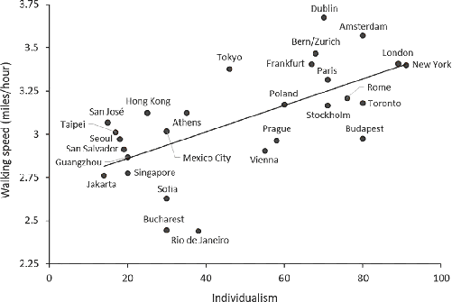
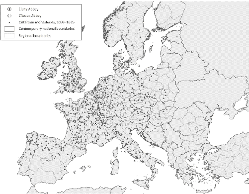
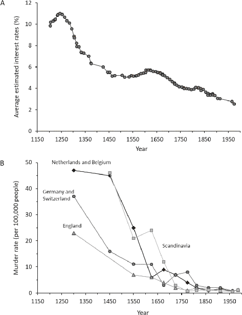
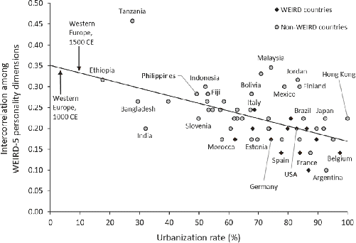

Whenever commerce is introduced into any country, probity and punctuality always accompany it … Of all the nations in Europe, the Dutch, the most commercial, are the most faithful to their word. The English are more so than the Scotch, but much inferior to the Dutch, and in the remote parts of this country they [are] far less so than in the commercial parts of it. This is not at all to be imputed to national character, as some pretend. There is no natural reason why an Englishman or a Scotchman should not be as punctual in performing agreements as a Dutchman … A dealer is afraid of losing his character, and is scrupulous in observing every engagement … When the greater part of people are merchants, they always bring probity and punctuality into fashion, and these, therefore, are the principal virtues of a commercial nation.
—Adam Smith (1766), “Of the Influence of Commerce on Manners”1
They first appeared in 13th-century northern Italy, in cities like Milan, Modena, and Parma, but quickly diffused to England, Germany, France, and the Low Countries. In combination with bell towers, they synchronized the activities of everyone within earshot, telling them when to wake, work, and eat; they also dictated the commencement of public meetings, court proceedings, and local markets. These, the first mechanical clocks, increasingly took center stage in late medieval cities around Europe, adorning town halls, market squares, and cathedrals. Like an epidemic disease, mechanical clocks spread quickly from one urban center to another as towns and cities imitated the clocks built by their bigger and more successful competitors. Towns explicitly commissioned famous artisans to furnish clocks that were equal to or better than the ones in—variously—Venice, Breslau, Paris, and Pisa. Clocks also infected monasteries and churches, and began dictating to the monks, priests, and parishioners when to labor, dine, and worship. Public clocks became symbols of an orderly urban life and strict religious devotion. By 1450, 20 percent of urban centers with 5,000 or more people had at least one public clock, and by 1600 most churches had a clock.2
The spread of public clocks provides a visible historical marker for the emergence of WEIRD time psychology. If you’ve spent time in Amazonia, Africa, Oceania, or a wide range of other places, you’ve no doubt noticed the most obvious feature of WEIRD time psychology: an obsession with time thrift. Unlike my Fijian friends, I always feel like time is in short supply. I’m always trying to “save time,” “make time,” or “find time.” All day long, I’m tracking the clock because I need to be on time for my next meeting, appointment, or day-care pickup. By contrast, my Fijian friends and field assistants just can’t get into this clock-time mind-set, even when I provide both technological aids and direct financial incentives. Early on, when I began managing research projects in the Pacific, I purchased digital watches for all of my research assistants, hoping this might help them be on time for meetings, interviews, and meals. But, this didn’t help. They seemed to enjoy wearing the watches, perhaps as a fashion statement, but they almost never thought to actually look at the time. Once, while working on a laptop with a particularly eager research assistant, I looked down at the watch I’d given him to check the hour. I immediately knew the watch was wrong because it disagreed by too much with my own mental clock. His watch turned out to be 25 minutes slow, and we suspected that it had been wrong for weeks.
To measure time thrift, the psychologists Ara Norenzayan and Robert Levine developed a couple of techniques that they applied in 31 cities. In the metropolitan hubs of these cities, their team first discreetly timed people as they walked along major avenues. The idea is that people who are worried about time thrift walk faster. As you might expect, New Yorkers and Londoners blazed along the sidewalks, covering a mile in less than 18 minutes. Meanwhile, in Jakarta and Singapore, people strolled along at a reasonable pace, taking almost 22 minutes on average to cover a mile. This means that New Yorkers and Londoners were walking at least 30 percent faster than folks in the slower-paced cities. Figure 11.1 shows that urbanites in more individualistic countries tend to walk faster than those in less individualistic countries. This relationship holds even when we statistically control for differences in the size of cities.
To assess time thrift in a second way, the team went to downtown post offices in each city and randomly selected at least eight postal clerks for a stamp purchase. Using a protocol designed to minimize the influence of all factors except for the clerk’s pace, they secretly measured the time necessary to complete the transaction. Again, the more individualistic the country, the faster the clerk delivered the stamps. These data suggest that, even when comparing only people working in urban cores, those from more individualistic societies are more worried about time—about running out of it, saving it, or spending it “productively” (whatever that means). Thus, it seems that time thrift is embedded in the individualism complex and pops up in all kinds of ways.3

Where does the global variation in time thrift come from?
Much historical evidence, including data on the diffusion of mechanical clocks, suggests that this new time psychology had begun to ferment by the Late Middle Ages, likely from a mélange of individualism, self-focus, and analytic thinking that was brewing in the market towns, monasteries, and free cities of Europe. In these social worlds, achieving personal success and building relationships required individuals to invest in their own attributes and skills while at the same time getting stuff done—stacking up individual achievements. Facing greater impersonal competition, artisans, merchants, monks, and magistrates all aimed to cultivate reputations for punctuality, self-discipline, and precision. The new mechanical clocks didn’t initiate the shift toward a clock-time psychology in Europe; rather, they simply marked and catalyzed processes that were already underway. Before the clock, and later alongside it, monks used candles of fixed lengths to time their prayers while teachers, preachers, and builders used hourglasses to fix the lengths of their lectures, sermons, and lunch breaks.
This change in how people thought about time was much broader than simply an obsession with time thrift. Before the High Middle Ages, each “day”—the period from sunrise to sunset—was broken down into 12 hours. However, since the time between sunrise and sunset varies seasonally and geographically, the length of those hours varied. Life was largely organized by natural rhythms—daily, seasonal, and annual—and “the day” was organized by routine tasks. Moreover, there was often little or no distinction between “work time” and “social time,” since people socialized all day long while working.
A WEIRDer time psychology increasingly pervaded urban life during the Late Middle Ages and beyond. In the commercial world, merchants began paying workers weekly wages. In this system, “days” were set at a fixed number of hours, which permitted business owners to pay hourly wages for overtime (extra work) or to deduct a certain number of hours based on time lost due to weather or illness. Compensation was also made using piece rates, with workers paid for the quantity of horseshoes, pots, or blankets they produced (for each “piece”). The payment scheme forced artisans to think about efficiency—how many horseshoes can I hammer out in an hour? Markets increasingly opened and closed at specific hours, which heightened competition—all buyers and sellers could interact at the same time. Contracts began including specific dates with penalties, often calculated per day. In the realm of government, town councils began organizing themselves using fixed hours. In 1389, for example, the Nuremberg town council passed a statute that required councilmen to sit together for two hours both before and after lunch (high noon)—based on the sandglass—to discuss business. Late arrivals were fined. In England, courts began ordering defendants and witnesses to appear on specific dates, at particular hours.5
The focus on clock time, and the rapid adoption of new time-related technologies, appear to have paid off: European cities that adopted a public clock early—before 1450—grew economically more rapidly than nonadopters during the period from 1500 to 1700. Notably, this prosperity was not immediate but only accrued a few generations later, after these populations had adapted their minds and lifestyles in ways that permitted cities and towns to run like clockwork. Urban centers that installed clocks often later adopted printing presses. Detailed analyses suggest that both innovations subsequently and independently contributed to economic growth. The boost in prosperity induced by having a public clock was roughly equal to that associated with having a university. Interestingly, though, having a university made medieval cities more likely to adopt public clocks.6
Now, you might think that adopting a practical technology like a clock or a printing press doesn’t require some fancy psychological explanation like the one I’m offering here. Fortunately, history provides a comparative population in the Islamic world. Unlike their immediate neighbors in Christendom, the mosques and cities of the Islamic world seemed immune to the clock epidemic, just as they were to the printing press of the same era. Many Muslims knew of mechanical clocks, so they could have simply hired some Italian clockmakers to fix them up. But, people in these places weren’t eager to submit themselves to clock time. Instead, people cared about personal relationships, family ties, and ritual time. Muslims have long had the call to prayer, five times per day, which adds a reliable temporal structure to life (and primes prosociality). As with many other temporal systems, prayer times are based on the sun’s position, so they vary seasonally and geographically (as well as with the calculation methods used by different Islamic schools). This means that the periods between calls to prayer throughout the day do not provide a uniform temporal structure—they don’t organize the day or people’s minds like clock time. Of course, with Christendom’s rising prestige, rulers around the world did eventually import European-made mechanical clocks. But, like the ancient water clocks in the Islamic world or in China, these were showpieces and curiosities, not something for craftsmen, merchants, bureaucrats, monks, and inventors to organize their lives around. As I learned from my Fijian friends, clocks only keep you on schedule if you’ve internalized a devotion to clock time—it’s about your mind, not your watch.
The impersonal institutions that developed in Europe, which began employing hourly wages, piece rates, and fines for tardiness, likely motivated people to begin thinking about time and money in similar ways. Today, WEIRD people are always “saving” time, “wasting” time, and “losing” time. Time is always running out, and many of us try to “buy” time. While people in other societies think about time in diverse ways, WEIRD people have long been obsessed with thinking about time and money in the same way. As a contrast, consider this description of time psychology from the Berber-speaking Kabyle farmers in Algeria:
The profound feelings of dependence and solidarity … foster in the Kabyle peasant an attitude of submission and of nonchalant indifference to the passage of time which no one dreams of mastering, using up or saving … All the acts of life are free from the limitations of the timetable, even sleep, even work which ignores all obsession with productivity and yields. Haste is seen as a lack of decorum combined with diabolical ambition.7
The ethnographer here, Pierre Bourdieu, goes on to note that in this clan-based society, there are no notions of precise mealtimes or exact appointments. The clock is considered the “devil’s mill,” and upon meeting someone, “the worst discourtesy is to come to the point and express oneself in as few words as possible.” Instead of incessantly ticking off minutes and hours, time flows at differing speeds through different experiences, tasks, and events in a ritual cycle. If this sounds exotic, remember, it’s you (and especially me), not everyone else. The flavor and texture of time psychology among the Kabyle can be found in societies from around the globe.8
Compare Kabyle time to the sense captured in this gem from 1751 in a British colonial city:
Since our Time is reduced to a Standard, and the Bullion of the Day minted out into Hours, the Industrious know how to employ every Piece of Time to a real Advantage in their different Professions: And he that is prodigal of his Hours, is, in Effect, a Squanderer of Money.9
Capturing the essence of his own preindustrial society, this colorful quotation comes to us from the inventor, printer, and statesman Ben Franklin in Philadelphia. In giving advice to a young tradesman, Franklin also coined the maxim “Time is money,” which has now spread globally and into dozens of languages.10
By Franklin’s era, pocket watches were diffusing widely, and almost all successful business owners had one. In England, based on the inventories of the property owned by the poor (assessed at their death), nearly 40 percent of people had a pocket watch. In Paris, about a third of wage earners and 70 percent of servants owned a watch. Pocket watches were expensive, which means that many people spent a large fraction of their income to both know the time and impress their friends, customers, and employers. Instead of representing the “devil’s mill,” as among the Kabyle, a pocket watch in the hands of an artisan signaled that its owner was hardworking, diligent, and punctual.11
Broadly, within the context of an increasingly individualistic society, the coevolution of technologies like hourglasses, bells, and watches along with temporal metaphors like “time is money” and cultural practices like hourly pay and piece rates have profoundly shaped how people think about time. New technologies have linearized and digitized time to a degree never seen before, turning it into an ever-draining currency of temporal pennies. By effectively training themselves from a tender age with elements such as wall clocks, hourly chimes, and precise meeting times, people may have internalized the number line that forms the traditional clock face and incorporated this into how they make trade-offs between things now and in the future (time discounting). Whatever the full impact, the roots of these psychological shifts go much deeper into history than the Industrial Revolution and stretch back to at least the 14th century.12
Accompanying the spread of clock-time psychology in Europe, an expanding middle class began working longer and harder. This Industrious Revolution, as the economic historian Jan de Vries calls it, can be tracked back to at least 1650 or so, beyond which the trail of direct evidence peters out. I suspect that this rising industriousness was part of a longer-term trend. People’s time psychology was slowly coevolving with a stronger work ethic and greater self-regulation from at least the late Middle Ages through the Industrial Revolution. Clues to these psychological changes can be seen in the spread of mechanical clocks, greater use of the sandglass, rising concerns about punctuality, and the success of the Cistercian Order, with its spiritual emphasis on manual labor, hard work, and self-discipline. And, of course, these concerns and commitments lie at the heart of many Protestant faiths. Ben Franklin was, for example, the son of pious Puritans who lived among Quakers.13
One ingenious data source for studying people’s changing work habits comes from the Old Bailey, London’s Central Criminal Court, which provides a written record of cases from 1748 to 1803. During their court testimony, eyewitnesses often reported what they were doing at the time of a crime. These “spot-checks” provide over 2,000 instantaneous observations that together paint a picture of how Londoners spent their day. The data suggest that the workweek lengthened by 40 percent over the second half of the 18th century. This occurred as people stretched their working time by about 30 minutes per day, stopped taking “Saint Mondays” off (working every day except Sunday), and started working on some of the 46 holy days found on the annual calendar. The upshot was that by the start of the 19th century, people were working about 1,000 hours more per year, or about an extra 19 hours per week.14
While the historical evidence on work time makes a powerful case that people were working longer, all the historical data for this era have potential problems. With the Old Bailey evidence, for example, we don’t know what factors might have influenced who became a witness in court or how this might have changed over time—perhaps the court slowly developed an informal policy to accept only “reliable people,” which biased the witnesses toward people who worked longer hours. To address such concerns, the cognitive scientist Rahul Bhui and I compiled a database of 45,019 observations on how people from different traditional populations around the world use their time. From South America, Africa, and Indonesia, these populations include a variety of farming communities as well as both herders and hunter-gatherers. Like the Old Bailey observations, these data were spot-checks of what people were doing at a particular moment. Here, however, the observations were done by anthropologists, who randomly selected both the individuals observed and the observation times.
When we compare these diverse societies, the data show that men who engaged in more commercial work—like wage labor—spent more of their total day working. The results suggest that going from a fully subsistence-oriented population to a fully commercialized society would result in an increase in work time of 10 to 15 hours every week, raising the workweek from 45 to between 55 and 60 hours, on average. Annually, people worked an additional 500 to 750 hours.15
The combination of historical and cross-cultural data suggests that the rise of urbanization (Figure 9.5), impersonal markets (Figure 9.7), and commercial practices involving things like hourly wages probably increased the time that Europeans spent working. One key question is: What motivated people to work longer?
The historical data suggest that although some folks were certainly working to survive, many were working longer hours so that they could buy more stuff from Europe’s swelling streams of commercial goods. For the kitchen alone, Londoners could purchase tea, sugar, coffee, pepper, cod, nutmeg, potatoes, and rum. Pocket watches and pendulum clocks appeared in the 16th century and eventually became hot sellers. Literate folks could buy a range of printed books and pamphlets. People wanted all this for the stuff itself, of course, but also because of what it told others about them. In an individualistic world, what you buy tells people about what you can afford as well as what you value. From Bibles to pocket watches, people wanted to tell strangers and neighbors about themselves through their purchases. This, de Vries argues, drove up consumers’ desire for diverse goods and their willingness to work longer; stronger demand and more industrious workers drove up both economic production and consumer supply.16
So far, the data support the idea that people were gradually working longer hours, but that doesn’t tell us if they were working harder or more efficiently. This is a hard question to answer using historical data, but economic historians have devised some clever ways to use certain farm-related tasks to address it. For farming productivity in general, it’s difficult to estimate changes in workers’ efficiency or motivations over time, because agricultural innovation was ongoing and included novel technologies, improved techniques, and new crops, like potatoes and corn from the New World. However, the preindustrial technique used to thresh grain, which largely involved beating the stalks with a stick to knock the seeds off, didn’t change much at all over many centuries. In England, analyses of threshing data suggest that the efficiency of threshers doubled from the 14th to the early 19th century. Because threshing is easy to learn, this change is unlikely to be due to specialization or improved skills. It instead suggests that people were simply working more intensely.17
In the countryside, the increasing value placed on hard work and manual labor may have begun within certain segments of the medieval Church and diffused outward. As we saw earlier, the place to start looking is the Cistercian Order. Recall that, in addition to their emphasis on self-discipline, self-denial, and hard work, the Cistercians sought out the simplicity and serenity of remote rural areas. The monks accepted non-literate peasants into their order as lay brothers, and these men took vows of chastity and obedience. The monks also employed a range of servants, laborers, and skilled workers. Small communities, often with shops and artisans, sometimes clustered around the outskirts of monasteries. Together, these members, employees, and other contacts threaded social and economic connections that stretched out into the surrounding communities to create communication lines for the transmission of Cistercian values, habits, practices, and know-how. Figure 11.2 shows the distribution of Cistercian monasteries during the Middle Ages. Ninety percent had been founded by 1300.18
To assess whether the Cistercian presence influenced people’s work ethic after 1300, we can use contemporary survey data (2008–2010) from over 30,000 people spread around 242 European regions. The survey asked whether “hard work” is an important trait for children to learn. To link this survey measure to the Cistercians, Thomas Anderson, Jeanet Bentzen, and their colleagues calculated the density of Cistercian houses per square kilometer for each region outlined in Figure 11.2. Then, they connected everyone in the survey to the region where they grew up. The results show that the higher the density of Cistercian monasteries in a region during the Middle Ages, the more likely a person from that region today is to say that “hard work” is important for children to learn. This only compares people living within the same modern countries and holds after statistically accounting for various regional and individual differences, including people’s education and marital status. The psychological emphasis on “hard work” also manifests in contemporary economic data: regions that experienced a greater Cistercian presence during the Middle Ages are economically more productive in the 21st century and show lower rates of unemployment.19
Interestingly, the effect of a historical Cistercian presence in a region operates most strongly on Catholics compared to Protestants. That is, Catholics who grew up in regions that had been historically thick with Cistercians are much more likely to endorse the importance of “hard work” for children compared to Catholics from other regions. This makes sense, since the later diffusion of Protestant communities, whose members also often amplified the value of hard work, would have obscured the earlier influences of the Cistercians.21

Along with a greater willingness to engage in hard work or difficult tasks, individualism and impersonal markets may also have favored greater self-control and a willingness to delay gratification. In an open market for employees, friends, spouses, and business partners, people want to hire, befriend, marry, and associate with those who can achieve long-term goals, invest now for future payoffs, avoid temptation, and simply show up on time. By contrast, in a world governed by inherited and enduring relationships, people can’t just pick whom they want to hire, marry, or work with. They need to consider group loyalty and select partners with whom they have dense social interconnections. This is because it’s the embeddedness rather than their partner’s or employee’s disposition that people rely on.
Research connecting markets and commerce to psychological measures of patience and self-regulation is limited but still suggestive. Consider this study among the BaYaka, a population of African hunter-gatherers in the Congo Basin. Using a simple experiment, the anthropologist Deniz Salali assessed the patience of 164 adults in three different BaYaka communities. Two of these communities were traditional nomadic foraging camps in the forests, 60 km (37 mi) or more from the nearest market town. The third community resided within the town itself. Deniz offered people a choice between receiving either (A) one desirable soup stock cube now, or (B) five such cubes tomorrow. More patient people should be willing to wait a day for the five tasty cubes, while less patient people would tend to take the one immediately.
The BaYaka living in the market town were more patient: 54 percent of the town dwellers were willing to wait for the five cubes, while in the nomadic camps only 18 percent chose to wait. In their analysis, Deniz and her collaborator, Andrea Migliano, show that part of the difference between the town- and forest-dwelling BaYaka arose from differences in people’s participation in wage labor. Wage labor often requires individuals to work now and get paid days or weeks later, so this kind of payment scheme is effectively a training regime that demands work now for delayed rewards. And, as with other exchanges in impersonal markets, wage labor also often requires the trust in strangers that accompanies market norms.
In this situation, it’s not just that commercial institutions like wage labor create conditions that favor greater time discounting, but it’s also the case that traditional BaYaka institutions disincentivize delaying gratification in this situation. Food was, and still is, widely shared in BaYaka camps, so deciding to wait for the five cubes wouldn’t provide the decision-maker herself with any more tasty soup. Those living in the foraging camps who decided to wait a day for the five cubes helped only their fellow camp members, not themselves: when they received the five cubes, sharing norms required that they be shared with anyone who asked (and people aren’t shy about asking). Thus, camp members really faced a choice between one cube now or one tomorrow (with extra to give away). Practicing patience in this institutional environment doesn’t pay in ways that will foster the cultivation of deferred gratification in this context.22
This study alone doesn’t nail down an answer to the question of whether market integration specifically causes patience. For one thing, it’s possible that more patient people selectively moved from the forest into the town because, in town, patience pays off. Second, it’s possible that something else about town life is causing the change besides the market-based norms. Nevertheless, we know that patience, and specifically delay discounting, can be acquired via cultural learning (Chapter 2), and that it pays off in more income, literacy, and education—greater “success”—once labor markets and schools arrive on the scene. Together, these facts suggest that both cultural evolution and individual experience may ratchet up our patience in response to impersonal institutions, especially markets and schools.23
Can we anchor these psychological changes in history? That’s a tall order, but maybe we can get some purchase on it.
The historical record of medieval Europe doesn’t provide direct measures of people’s patience or self-control that would permit us to observe changes over time. However, researchers have argued that we can see these psychological changes in the gradual decline of both interest rates and murder rates. Let’s start with interest rates.24
Interest rates are heavily influenced by people’s willingness to defer gratification, to discount the future. To see this, consider a choice between spending $100 tonight on a delicious meal with friends versus investing this money at 10 percent for 30 years. At this interest rate, you’d get $1,745 in 30 years instead of just the $100. The question is whether you are willing to forgo the nice dinner tonight for a big payoff in three decades. If you don’t discount the future much, you’re more likely to invest the $100 and skip the fancy dinner. But, if 30 years seems too far off to worry about, you’ll enjoy the feast. In this situation, the more patient people are, the lower the interest rate can be without the dinner option tempting them. In such populations, we expect the interest rate to decline. By contrast, if people became less patient—more inclined to “eat, drink, and be merry” today (i.e., take the tasty soup cube now)—they’d only forgo immediate payoffs when the future rewards on offer were really big—so, interest rates would go up (or, no one would ever invest). Thus people’s willingness to defer gratification is a key contributor to interest rates.
With this in mind, Figure 11.3A shows that interest rates have been dropping in England for nearly a millennium. The earliest estimates of interest rates are in the 10 to 12 percent range. By 1450, they had dropped to just below 5 percent, and by the time England taxied onto the runway of the Industrial Revolution in 1750, interest rates had fallen to below 4 percent (when Londoners were working longer). Rates continued to fall as the Industrial Revolution accelerated, though the decline was modest compared to that observed during the medieval period.25
Now, because economists typically assume that psychology is fixed (a big mistake), their default explanations for changes in interest rates typically focus on economic growth or on changes in risk due to political shocks (e.g., the king claims your lands), plagues, or wars (e.g., a different king claims your lands). The rising incomes created by rapid economic growth could lower interest rates because people might—theoretically—spend more profligately now, figuring they can pay it all off later with their higher income. By contrast, in a risky world you could lose your investments when the government confiscates them from you. Or, of course, you might die young in a plague or violent raid. Facing this situation, you consume now so that future events can’t steal these pleasures from you.

These standard economic explanations, however, don’t seem to account for the long-term trends in England. The economic historian Greg Clark argues that some underlying psychological factor like patience must be driving interest rates down. These downward trends continued through periods of uncertainty and instability like the Black Death (1350), the Glorious Revolution (1688), and Britain’s many wars against France, Spain, and the Netherlands. Even after 1850, during one of the fastest economic accelerations in history, interest rates kept going down (not up, as some might expect). At least part of this long-term trend probably reflects a psychological change in something like patience or self-control.27
While a decline in interest rates like that in Figure 11.3A appears in data from other parts of Europe, such as Holland, we don’t see similar trends outside of Europe during the same era. For example, even in complex Asian economies, 10 percent was about the lowest rate observed. In the lower Yangtze delta, where commerce flourished in the late 14th century, interest rates were 50 percent. In Korea during the 18th and 19th centuries, interest rates ranged from 25 to 50 percent, with an average of 37 percent. In 17th-century Osaka, interest rates were comparatively low, between 12 and 15 percent for loans between merchant houses. In Istanbul during the 17th and 18th centuries, interest rates were around 19 percent for private loans. By contrast, interest rates in England and Holland were firmly below 5 percent before the Industrial Revolution.28
The connection between interest rates and patience is consistent with a wide range of other psychological findings. Adults who, as children, resisted eating the marshmallow immediately (Chapter 1) go on to save more money in their bank accounts, invest more in schooling, and stay out of prison. Those better able to wait were also less likely to have addiction problems and more likely to have a retirement plan. Among adults, those showing greater patience in delay-discounting tasks (e.g., $100 now, or $150 in one year) save more of their income, invest more for the future, and attend school longer. These relationships in the modern world are strongest in Africa, Southeast Asia, and the Middle East, probably because formal institutions play less of a role. Even in remote Amazonian populations, which are just beginning to engage in global markets, those willing to delay gratification in time-discounting tasks go on to attend newly established schools for longer and attain greater literacy. Finally, as noted in Chapter 9, convicted criminals show greater impatience and less self-control than those in demographically matched populations.29
However, patience and self-control don’t always pay off, and how much they pay off depends on both informal and formal institutions. In Liberia, the economist Chris Blattman and his colleagues conducted a randomized experimental intervention with nearly 1,000 poor men. Some received eight weeks of training that increased their self-control and patience while reducing their impulsivity. These psychological changes resulted in the men committing fewer crimes and saving more money in the short term. However, while this study decisively demonstrates that patience and self-control can be modified culturally, these psychological shifts didn’t generally cash out in the long run. The reason was clear: 70 percent of the men reported that their growing nest eggs were stolen, often taken from them by corrupt police during shakedowns. Cultural evolution won’t favor the emergence of greater patience in this environment.
Similarly, intensive kinship, through its strong normative obligations to a web of distant relatives, may create pressures that similarly disincentivize the cultivation of self-control or patience. I’ve seen this frequently in Fiji: an industrious person works hard to save money, but then some distant cousin-brother needs cash for a funeral, wedding, or medical procedure, so the nest egg evaporates. This make sense because intensive kin-based institutions manage risk, retirement, and harmony collectively—through relationships—instead of via individual self-control and secure savings.30
The influence of patience and self-control on crime highlighted above points to another long-term statistic that is available well back into the Middle Ages: murder rates. For four different European regions, Figure 11.3B shows that murder rates plummeted from 20–50 per 100,000 people in 1300 CE to less than 2 per 100,000 in 1800, with much of the decline occurring before 1550. Since the massive economic expansion that accelerated after 1800, murder rates have continued to slowly decline in these regions, but this has been relatively gradual compared to the medieval slide. As with interest rates, we aren’t directly observing self-control or self-regulation, and murder rates are certainly influenced by many factors besides psychological change. But, crucially, most of these murders were the “barroom brawl” variety in which men (yes, not women) have to suppress their tempers, steel their self-control, and just walk away. Wiping that smug smirk off that asshole’s face would feel good now, but what then? Illustrating this, a 13th-century officer of the French Crown defined “homicide” as “when one kills another in the heat of a fight, in which tension turns into insult and insult to fighting, by which one often dies.” Indeed, an analysis of homicide records from 13th-century England reveals that 90 percent of cases began as spontaneous acts of aggression in response to insults or quarrels rather than as premeditated acts. In 16th-century Arras (France), 45 percent of murders were committed in or just outside of taverns, while half or more of all violent crimes in Douai (France) and Cologne (Germany) involved booze.31
The idea here is that people were adapting psychologically to a world that was transforming from one governed by the external constraints of kinship ties and the incentives generated by family honor to one in which independent shopkeepers, artisans, and merchants held sway, interacting flexibly with myriad strangers in mutually beneficial transactions. In this expanding individualistic world, a reputation for sudden, violent, and undisciplined responses to minor insults or simple misunderstandings didn’t pay anymore. Who wants to defend, marry, or do business with a hothead? In an open market of strangers where people are shopping for relationships, you can just find another friend, fiancée, or employee, one with better self-control.32 In Traité Genéral du Commerce (1781), the Dutch lawyer Samuel Ricard makes my case:
Commerce attaches [men] one to another through mutual utility. Through commerce the moral and physical passions are superseded by interest … Commerce has a special character which distinguishes it from all other professions. It affects the feelings of men so strongly that it makes him who was proud and haughty suddenly turn supple, bending and serviceable. Through commerce, man learns to deliberate, to be honest, to acquire manners, to be prudent and reserved in both talk and action. Sensing the necessity to be wise and honest in order to succeed, he flees vice, or at least his demeanor exhibits decency and seriousness so as not to arouse any adverse judgment on the part of present and future acquaintances; he would not dare make a spectacle of himself for fear of damaging his credit standing and thus society may well avoid a scandal which it might otherwise have to deplore.33
Tellingly, while murder rates were declining overall, the percentage of victims who were family members of the murderer rose from almost none to over half by the end of the 19th century. Men stopped killing as many strangers and acquaintances in bars over insults and status challenges and instead were more inclined to kill family members. Few stats could more strongly highlight the rise of impersonal prosociality and the concurrent decline of the centrality of kinship.
The gradual diffusion of self-control and patience seems to have spread outward from the urban middle class—the merchants, artisans, professionals, and civil officials—to the laborers and elites. This can be seen in the fact that it was the urban middle class, not the much richer aristocrats, who bought the first government bonds and invested in the early joint stock companies. In the latter half of the 18th century, for example, the stockholders of the East India Company were primarily bankers, government officials, retailers, military personnel, clergymen, and merchants.34
The patterns and dimensions of personality observed among Americans and other WEIRD people are largely believed by psychologists to represent the human pattern. I suspect this is wrong. Instead, an evolutionary approach suggests that individuals and populations will—at least partially—adapt or calibrate their dispositions to the stable and enduring niches of the social, economic, and ecological environments they confront over the course of their lives and across generations. Developmentally, we expect children to adapt their personalities to the contours, opportunities, and affordances of the worlds they encounter while growing up. More subtly, we expect cultural evolution to shape personality configurations by favoring different packages of worldviews, motivations, standards, ritualized practices, and routines of life.35
To understand the cultural evolution of dispositional traits, and specifically what psychologists define as personality (e.g., extroversion, agreeableness, etc.), let’s take a stroll from the origins of farming to the growing commercial cities of medieval Europe. Since the dawn of agriculture about 12,000 years ago, there’s been basically one primary occupation open to most people—farmer. With only a male-female division of labor, farm families had to be generalists: sowing, weeding, harrowing, harvesting, reaping, threshing, milling, herding, shearing, and butchering were just some of the basics. People also usually had to build houses, make tools, weave clothing, care for animals, and defend their communities. As societies expanded in size and complexity, broad economic specializations did emerge, but this didn’t give individuals a menu of choices. Often, particular clans, kindreds, or local communities cultivated specific skills or know-how, and developed norm-governed relationships with other groups possessing complementary skills.
In the complex chiefdoms of Polynesia, for example, there were clans that variously specialized in farming, fishing, canoe making, and—of course—governing (the chiefs). Whether you were a farmer or a warrior depended on which clan you were born into. As the first cities emerged, occupational specializations and the division of labor expanded, but the structure of knowledge and the manner of recruiting the next generation of specialists didn’t change that much. In these communities, individuals couldn’t easily pick their preferred occupations. Instead, kin-based institutions dominated, so the occupational choices of individuals were strongly constrained by their families, clans, castes, or ethnic groups. In various places, there were milk-selling clans, merchant families, and sandal-making castes. Instead of finding a niche that fit them and adapting further to better fill it, people had to figure out how to fill whatever niches they were born into. I don’t want to exaggerate this, because some movement was sometimes possible, but the options were generally few and the inherited constraints substantial.36
In Europe, however, a different world was developing during the Middle Ages. As explained earlier, cities and towns were growing rapidly; impersonal markets were expanding; specialized voluntary associations were selectively recruiting and training members; and diverse occupations were sprouting and proliferating: e.g., clockmaker, lawyer, accountant, printer, gunsmith, and inventor. At the same time, weak kinship ties, greater residential mobility, and an expanding list of rights and privileges in town charters guaranteed individuals substantial freedom to join a growing list of associations, apprenticeships, guilds, and occupations. This social environment meant that individuals had to “sell themselves” based on their personal attributes, specialized abilities, and dispositional virtues, not primarily on their friendships, lineages, or family alliances—though of course the value of relationships and connections fades but never disappears.37
In this world, people could increasingly select the occupations or groups that already provided a reasonable fit for their temperaments, preferences, and attributes; then, they could work to further hone their attributes in order to excel in competition against others. A man could make a living as a sociable salesman, conscientious craftsman, scrupulous scribe, or pious priest. Traits got exaggerated or suppressed along the way. Of course, women had dramatically fewer options, but more than in most societies. Remember, they married late, could often pick their husbands, and frequently had paying jobs prior to marriage. Unlike in other societies, women could also skip marriage altogether and instead follow the call of God into Church service. Overall, this gave individuals more latitude to pick the social roles, relationships, and occupations that fit their inherited characteristics. Over time, they could adapt, specialize, and exaggerate their most important traits.38
Computer simulations of the process suggest that these social and economic developments would have generated a greater diversity in personal attributes as individuals specialized into different social niches and occupations. Or, to put it differently, the number of distinct personality dimensions would have started rising. Over time, this process would have intensified, because the larger, denser, and more relationally mobile a population, the more individuals can seek out and actually find the relationships and associations that best fit their talents, attributes, inclinations, peculiarities, and preferences.39
This approach to personality runs contrary to much work in the discipline of psychology. Personality psychologists have long assumed that certain dispositions are important and universal; and they’ve sought to reduce personality to certain types or to a small set of dimensions. The most prominent approach argues that humans have five largely independent dimensions of personality: (1) openness to experience (“adventurousness”), (2) conscientiousness (“self-discipline”), (3) extraversion (vs. introversion), (4) agreeableness (“cooperativeness” or “compassion”), and (5) neuroticism (“emotional instability”). These have often been interpreted as capturing the innate structure of human personality. Psychologists call these personality dimensions the “BIG-5,” but I’ll call them the WEIRD-5.40
When psychologists have deployed this approach to personality in non-WEIRD populations, the WEIRD-5 can usually be found, although in places like Hong Kong and Japan, only four of the five dimensions consistently emerge. Unfortunately, most of this cross-cultural work has relied on relationally mobile university students in urban centers. Using such nonrepresentative samples effectively skims off those in each population who are most likely to possess the WEIRD-5 and eliminates much of the institutional, occupational, and demographic variation that we’d expect to be most important for identifying differences in personality across societies. The rough applicability of the WEIRD-5 approach in these settings isn’t surprising.41
To move forward, rather than this scattershot approach to testing cross-cultural variation, which involves using easily accessible subpopulations that are both homogeneous and nonrepresentative, we need a detailed study of personality from a subsistence-oriented society with few occupations and little contact with global markets.
Fortunately, the anthropologist Mike Gurven and his team shook up the status quo in personality psychology when they delivered just such a study, which landed like a cement block in one of psychology’s leading scientific journals. After adapting state-of-the-art psychological tools for use in a nonliterate population, Mike’s team explored the structure of personality among the Tsimane', a group of farmer-foragers who live in Bolivia’s tropical forests. We briefly encountered the Tsimane' in Chapter 9: they were one of the dots in the lower left of Figure 9.2, which shows that they make low offers in the Dictator Game and aren’t integrated into the market economy. Tsimane' essentially have one of two jobs: either you’re a husband or you’re a wife. Husbands mostly hunt, fish, build houses, and make tools. Wives mostly weave, spin, cook, and care for children. Both spouses pitch in on farming.42
The rigorous data collection and in-depth analyses conducted by Mike’s team are impressive. They tested over 600 Tsimane', retested the same people, replicated their findings in a fresh sample of 430 couples (where people evaluated their spouses), and checked their findings in a variety of ways.
So, did the Tsimane' reveal the WEIRD-5?
No, not even close. The Tsimane' data reveal only two dimensions of personality. No matter how you slice and dice the data, there’s just nothing like the WEIRD-5. Moreover, based on the clusters of characteristics associated with each of the Tsimane'’s two personality dimensions, neither matches up nicely with any of the WEIRD-5 dimensions. Mike and his team argue that these dimensions capture the two primary routes to social success among the Tsimane', which can be described roughly as “interpersonal prosociality” and “industriousness.” The idea is that if you are Tsimane', you can either focus on working harder on the aforementioned productive activities and skills like hunting and weaving, or you can devote your time and mental efforts to building a richer network of social relationships. Aside from these broad strategies, everyone has to be a generalist. All men, for example, have to learn to craft dugout canoes, track game, and make wooden bows. Extroverts can’t become insurance salesmen or cruise directors, while introverts can’t become economists or programmers.43
With the Tsimane' case under our belt, let’s return to the cross-cultural data on personality. I’d suggested that it’s not surprising that we perceive the WEIRD-5 emerging across diverse societies, because psychologists have relied almost entirely on urban undergraduates in their cross-cultural studies. However, despite this homogeneity, it’s still possible to detect the ongoing cultural evolution of personalities in the cross-cultural data. Recall that among WEIRD people, the five dimensions of personality are usually independent and uncorrelated. This means that knowing someone’s score on the “agreeableness” dimension, for example, doesn’t tell you about their “extroversion” or “neuroticism.”
Now, imagine that the number of social niches available to WEIRD people begins contracting. As the options decline, there may no longer be any niches where people can successfully be both extroverted and neurotic (e.g., movie star) or both introverted and adventurous (e.g., field primatologist). This reduction in the number of social niches will gradually increase the correlations among the existing personality dimensions because the shrinking number of niches and specialists means that everyone has to be more of a generalist, and certain personality combinations just aren’t an option. As this process continues, some dimensions will become so correlated that they will effectively collapse into a single new dimension. Eventually, there will be four, three, and finally two personality dimensions.
To test this idea, we can examine the average intercorrelation among the WEIRD-5 personality dimensions across societies. The expectation is that societies with less occupational specialization and fewer social niches will show higher intercorrelations among the WEIRD-5 dimensions. Since the number of social niches available in any population is strongly correlated with occupational specialization and urbanization in the modern world, we should expect places with less urbanization and/or occupational specialization to show greater interdependence (intercorrelation) among their WEIRD-5 dimensions.
Using data from nearly 17,000 people in 55 countries, Aaron Lukaszewski, Mike Gurven, Chris von Rueden, and their colleagues found that the more urbanized a country, or the greater its occupational diversity, the lower the intercorrelations were among the WEIRD-5 dimensions. Figure 11.4 illustrates this using urbanization: people from more rural countries reveal less overall independence among their personality dimensions, which indicates movement toward fewer personality dimensions. This analysis suggests that much of the variation in personality structure among WEIRD societies may arise from differences in urbanization or occupational diversity.44
We’ve already seen how these personality patterns can be anchored in medieval history, based on the dramatic increases in urbanization (Figure 9.5), market integration (Figure 9.7), and occupational guilds (Figure 10.6). These trends, together with the evidence of the psychological impact of the Church’s MFP, suggest that urbanites had an expanding number of social and economic niches they could and did voluntarily enter. For fun, I’ve marked the approximately comparable urbanization rates for western Europe in Figure 11.4. As you can see, these rates were substantially lower than those found in any of the countries studied at the dawn of the 21st century. This suggests that personality configurations in Europe were probably different in the Middle Ages compared to today, but they had begun evolving in a WEIRD direction.

Of course, we shouldn’t take my backward projection in Figure 11.4 too seriously, since we expect modern urbanization rates to capture—in some complex way—the presence of diverse occupations, relational mobility, labor mobility, individualistic motivations, and voluntary associations. For this reason, we don’t expect the residents of the urbanized areas in China or the Islamic World during the Middle Ages to have a personality structure anything like the WEIRD-5.
Nevertheless, to the degree that historical urbanization rates roughly capture a world in which individuals could select from a diversity of social niches and occupational specializations, my backward projection might be useful. Imagine sliding back in time along the line in Figure 11.4 toward a more agrarian society with only one main occupation—farmer. At first, the five personality dimensions found in the most urbanized populations become increasingly correlated. And then, they start collapsing into each other. Eventually, if Mike and his collaborators are correct, we’ll arrive in a world with something like one or two personality dimensions that correspond to the major strategies for achieving social success based on the local ecology, technology, and set of institutions.
The configuration of our personalities reflects only part of how cultural evolution has shaped this aspect of our psychology. There’s perhaps a deeper but subtler impact. As suggested in Chapter 1, intensive kin-based institutions demand that individuals behave in a range of different ways depending on their relationships to other people. Some relationships explicitly call for joking, while others demand quiet submission. By contrast, the world of impersonal markets and relational mobility favors consistency across contexts and relationships as well as the cultivation of unique personal characteristics specialized for diverse niches. For at least a millennium, these cultural evolutionary pressures have fostered a rising degree of dispositionalism. Individuals increasingly sought consistency—to be “themselves”—across contexts and judged others negatively when they failed to show this consistency. Understanding this helps explain why WEIRD people are so much more likely than others to impute the causes of someone’s behavior to their personal dispositions over their contexts and relationships (the Fundamental Attribution Error), and why they are so uncomfortable with their own personal inconsistencies (Cognitive Dissonance). Reacting to this culturally constructed worldview, WEIRD people are forever seeking their “true selves” (good luck!). Thus, while they certainly exist across societies and back into history, dispositions in general, and personalities specifically, are just more important in WEIRD societies.46
Traditionally, Hadza hunter-gatherers engaged in no commerce among themselves and little trade with other groups. When necessary, they may have even resorted to silent trade (Chapter 9) with the surrounding agricultural and pastoralist communities. Underlining this pattern, the longtime Hadza ethnographer James Woodburn writes, “Exchange with other Hadza is reprehensible. To barter, to trade or to sell to other Hadza is, even in the 1990s, really not acceptable …” Nevertheless, the inexorable expansion of global markets has begun to engulf the Hadza in swarms of curious tourists. How are these impersonal markets influencing Hadza psychology?47
In an elegant experiment, the anthropologist-cum-psychologist Coren Apicella and her colleagues examined a phenomenon called the endowment effect among the Hadza. Participants were randomly given one of two different-colored lighters, which are useful for starting cooking fires. Then, participants were given an opportunity to exchange their lighter for one of a different color. How often did they make the trade? Because Coren randomly assigned participants to receive one of two different-colored lighters, we’d expect people to trade in their lighters about half of the time—that is, if they are rational and have color preferences.48
In WEIRD populations, people rarely trade in this experiment, so the frequency of lighter exchanges would be much lower than 50 percent, and probably about 10 percent. WEIRD people get psychologically attached to stuff they personally own in ways that make them behave in seemingly irrational ways—this emotional attachment is the endowment effect. Something about personally owning a thing seems to make it more valuable. This WEIRD psychological pattern is just as strong in WEIRD kindergarteners as it is in university students, so it’s not due to any direct personal experience with buying or selling stuff.49
What about the Hadza?
Well, it turns out that it depends on which Hadza. In the most remote Hadza camps, where people live as full-time hunter-gatherers and rely very little on trade or markets, Hadza are basically rational actors, trading their lighters about half the time. However, when Coren ran these experiments in the more market-integrated Hadza camps, where people increasingly rely on selling their arrows, bows, and headbands to adventure tourists, participants kept their initial lighters 74 percent of the time.
This is striking: hunter-gatherers with little market integration show no endowment effect, but when part of this population is exposed to impersonal markets, they begin irrationally holding on to their initial endowments. This occurs despite the fact that all Hadza generally share the same kin-based institutions, language, religious beliefs, and other aspects of culture.
Coren got the same results when she replaced the lighters with food, using packages of different kinds of biscuits. The market-integrated Hadza kept their initial biscuits 76 percent of the time, while Hadza living in remote camps kept them only 45 percent of the time. Once again, the Hadza living a traditional lifestyle were basically rational traders, while the market-integrated Hadza revealed a clear endowment effect.
What gives? What’s the link between markets and the endowment effect?
This is a good question. I suspect that impersonal markets cultivate an emphasis on personal attributes, unique abilities, and individual ownership. Such markets can also foster conspicuous consumption (like fancy pocket watches), with people using consumer goods to signal their personal qualities. Psychologists have argued that this self-focus leads people to see their own personal property as extensions of themselves, which imbues their stuff with greater value through its connection to the owner’s personal identity. Mugs, lighters, and biscuits get better when they are my mugs, lighters, and biscuits. This idea has been supported by research comparing the size of the endowment effect between North American and East Asian undergraduates. Not surprisingly, North Americans exhibit a stronger endowment effect than do East Asians. Both groups, of course, are equally market-integrated, but they possess distinct social norms that either elevate the centrality of the individual or suppress it into the collective.50
It’s important not to see the absence of an endowment effect among the nonmarket Hadza as the “natural condition” of humanity. The Hadza possess their own potent social norms, which promote the widespread sharing of food and other goods in ways not based on direct exchange, partner choice, or reciprocity. For example, they play a gambling game in which players can win each other’s arrows, knives, and headbands. If chance favors a particular person and that player manages to accumulate a lot of good stuff, he is under strong social pressure to continue gambling until chance catches up with him and a degree of equality is restored. If he resists, for instance by slipping away to another camp, he’ll find himself swamped with endless requests for his bounty of goods. Social norms dictate that he must share, so his store of goods won’t last for more than a couple of weeks. In short, among the Hadza, one just can’t get too attached to one’s stuff, because soon it will be someone else’s stuff. Such institutions should suppress any inclination toward an endowment effect.51
Given the limited cross-cultural data available, my explanation for the origin of the endowment effect remains only a proposal. The reason we don’t know more is that both economists and psychologists studying Western samples have simply assumed for decades that they were measuring a feature of our species’ psychology rather than a local cognitive calibration to a society’s institutions, languages, and technologies. Like so many other psychological findings, the intensity of the endowment effect ranges from an extreme in WEIRD societies to nonexistent among the traditional Hadza.
Before concluding this chapter, I need to come clean. As with the endowment effect, the ideas presented in this chapter are more speculative than in the preceding chapters, and, while there’s much supportive evidence, it is often patchy, and some key insights hinge on single studies. These studies, by pioneers like Mike Gurven and Coren Apicella, are of the highest quality, but they are still only single studies and sometimes involve only one population. In prior chapters, I generally had multiple converging lines of data from different researchers, with large samples from several societies. So, be sure to adjust your confidence accordingly.
The big picture in this book is that our minds adapt, often over centuries through cultural evolution, to the institutional and technological worlds we encounter. To understand WEIRD psychology, then, we need to consider the more individualistic world that began developing in parts of Europe during the second millennium of the Common Era. To illustrate some of the relevant psychological patterns created by this process, this chapter has focused on two interrelated packages, one centered around how we think about time, labor, punctuality, and patience, and a second cluster that includes WEIRD personalities, dispositions, and the centrality of the unitary “self.” In the High and Late Middle Ages, a growing number of European communities began to adapt how they thought about time and money, along with their feelings about labor, work, and efficiency. With the declining importance of relationships and kin-based institutions, cultivating a personal reputation for hard work, efficiency, self-control, patience, and punctuality became increasingly important. Voluntary organizations such as guilds, monasteries, and towns devised incentives to promote these attributes and inculcate them in members in order to select and define their membership and distinguish themselves from other groups. People increasingly came to believe that God cared about these traits, or at least that possessing them signaled God’s favor. This fed into the new Protestant faiths. As cities grew, markets expanded, and voluntary associations proliferated, people increasingly selected the social niches and occupational specializations best suited to their attributes. They then further molded and honed those raw dispositions, talents, and abilities to best fill their chosen niches. The process reformulated the structure of personalities—giving us the WEIRD-5 and cementing the centrality of personal dispositions over contexts and relationships.
Over the course of Parts II and III in this book, we have explored the origins and evolution of some of the major aspects of WEIRD psychology. However, there is every reason to believe that the psychological variation we’ve seen represents only a thin slice of the total diversity that exists around the world. Moreover, in explaining some of this psychological variation, I’ve considered the influence and interaction of kin-based institutions, impersonal markets, war, benign intergroup competition, and occupational specialization. These likely capture only a small fraction of the myriad ways that cultural evolution has shaped people’s brains and psychology in response to diverse institutions, religions, technologies, ecologies, and languages. All we’ve done is poke our heads below the surface and look around. This psychological iceberg is clearly big, but we can’t tell exactly how big, or how deep into the murky depths it goes.